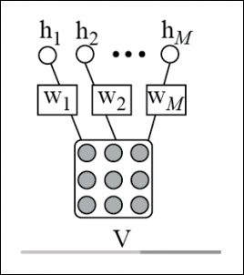
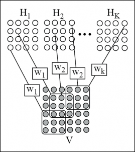

Very high dimensional inputs, such as images or videos, put immense stress on the memory, computation, and operational requirements of traditional machine learning models. In Chapter 3 , Convolutional Neural Network, we have shown how replacing the matrix multiplication by discrete convolutional operations with small kernel resolves these problems. Going forward, Desjardins and Bengio [123] have shown that this approach also works fine when applied to RBMs. In this section, we will discuss the functionalities of this model.

Figure 5.7 : Figure shows the observed variables or the visible units of an RBM can be associated with mini batches of image to a compute the final result. The weight connections represents a set of filters
Further, in normal RBMs, the visible units are directly related to all the hidden variables through different parameters and weights. To describe an image in terms of spatially local features ideally needs fewer parameters, which can be generalized better. This helps in detecting and extracting the identical and local features from a high dimensional image. Therefore, using an RBM to retrieve all the global features from an image for object detection is not so encouraging, especially for high dimensional images. One simple approach is to train the RBM on mini batches sampled from the input image, placed in blocks on Hadoop's Datanodes to generate the local features. The representation of this approach, termed as patch-based RBM is shown in Figure 5.7. This, however, has some potential limitations. The patch-based RBM, used in the distributed environment on Hadoop, does not follow the spatial relationship of mini batches, and sees each image's mini batches as independent patches from the nearby patches. This makes the feature extracted from the neighboring patches independent and somewhat significantly redundant.
To handle such a situation, a Convolutional Restricted Boltzmann machine (CRBM) is used, which is an extension of the traditional RBM model. The CRBM is structurally almost similar to RBM, a two-layer model in which the visible and hidden random variables are structured as matrices. Hence, in CRBM, the locality and neighborhood can be defined for both visible and hidden units. In CRBM, the visible matrix represents the image and the small windows of the matrix define the mini batches of the image. The hidden units of CRBM are partitioned into different feature maps to locate the presence of multiple features at multiple positions of the visible units. Units within a feature map represent the same feature at different locations of the visible unit. The hidden-visible connections of CRBM are completely local, and weights are generally split across the clusters of hidden units.
The CRBM's hidden units are used to extract features from the overlapping mini batches of visible units. Moreover, the features of neighboring mini batches complement each other and collaborate to model the input image.
Figure 5.8 shows a CRBM with a matrix of visible units V and a matrix of hidden units H, which are connected with K 3*3 filters, namely, W1, W2, W3,...WK. The hidden units in the figure are split into K submatrices called feature map, H1, H2,...HK. Each hidden unit Hi signifies the presence of a particular feature at a 3*3 neighborhood of visible units.
A CRBM, unlike a patch-based RBM, is trained on the whole input image or a large region of the image, to learn the local features and exploit the spatial relationship of the overlapping mini batches, processed in a distributed manner on Hadoop. The hidden units of overlapping mini batches depend and cooperate with each other in a CRBM. Therefore, one hidden unit, once explained, does not need to be explained again in the neighborhood overlapping mini batch. This in turn helps in reducing the redundancy of the features.

Figure 5.8: The computation involved in a CRBM is shown in the figure
CRBMs can be stacked together to form deep neural networks. Stacked Convolutional Restricted Boltzmann machines (Stacked CRBMs) can be trained layer wise, with a bottom-up approach, similar to the layer wise training of fully connected neural networks. After each CRBM filtering layer, in a stacked network, a deterministic subsampling method is implemented. For subsampling the features, max-pooling is performed in non-overlapping image regions. The pooling layer, as explained in Chapter 3 , Convolutional Neural Network, helps to minimize the dimensionality of the features. On top of that, it makes the feature robust to small shifts and helps to propagate the higher-level feature to grow over regions of the input image.
Deep CRBMs require a pooling operation, so that the spatial size of each successive layer decreases. Although, most of the traditional convolutional models work fine with inputs of a variety of spatial size, for Boltzmann machines it becomes somewhat difficult to change the input sizes, mainly due to a couple of reasons. Firstly, the partition function of the energy function changes with the size of input. Secondly, convolutional networks attain the size invariance by increasing the size of the pooling function proportional to the input size. However, scaling the pooling regions for Boltzmann machines is very difficult to achieve.
For CRBMs, the pixels residing at the boundary of the image also impose difficulty, which is worsened by the fact that Boltzmann machines are symmetric in nature. This can be nullified by implicitly zero-padding the input. Bear in mind that, zero-padding the input is often driven by lesser input pixels, which may not be activated when needed.